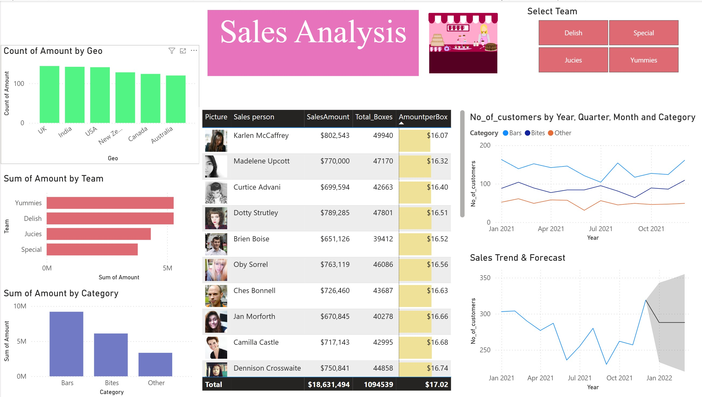
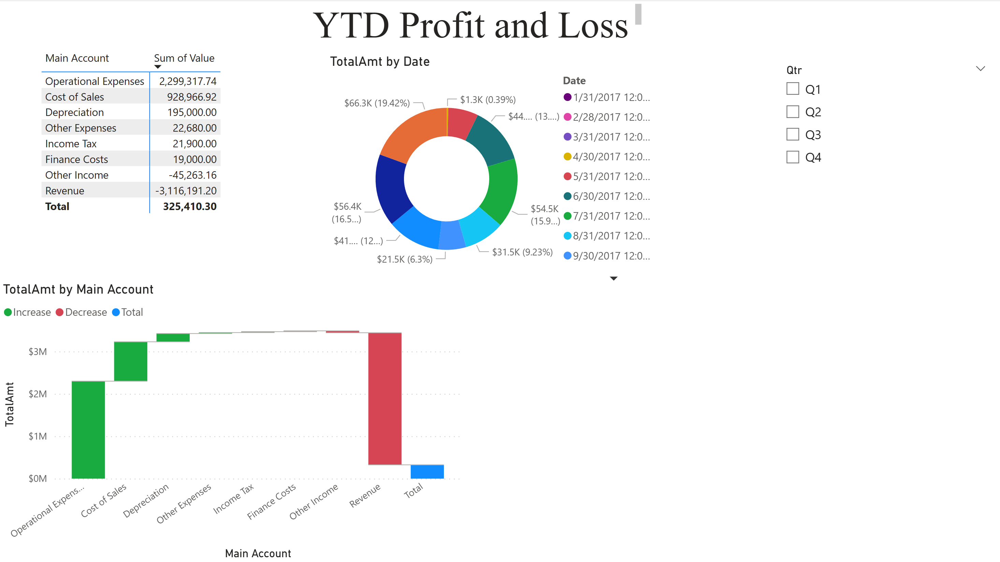
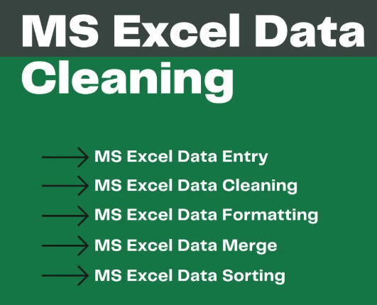

“In this project, I imported sales data from Excel into Power BI, performed data cleaning and modeling to establish accurate relationships,
and developed DAX measures for advanced analytical insights. Interactive dashboards were created to visualize key performance metrics, and the final reports were published to enable data-driven business decisions.”
Finance Statement Analysis

Project Description:
In this project, I demonstrated my ability to work with multiple tables and build a comprehensive data model. The process involved appending and merging datasets,
performing pivot and unpivot transformations, adding calculated columns, and removing unnecessary fields for cleaner data representation.
I also created a date table and developed key measures to support analytical insights.
The final deliverable is an interactive dashboard featuring various visualizations such as line charts, waterfall charts, and more. It allows users to
slice and filter data dynamically—analyzing performance by region, quarter, and business segment (Enterprise, Government, and Small Business).
This project highlights my skills in data modeling, transformation, and visualization to drive meaningful business insights.

Project Description:
In this project, I demonstrated my data cleaning skills using Microsoft Excel. The process involved checking and correcting data types for each field, removing blank rows, and eliminating unwanted spaces using the TRIM() function. I formatted text consistently with the UPPER(), LOWER(), and PROPER() functions, and utilized REPLACE() and SUBSTITUTE() to correct and validate data entries. This ensured that the dataset was accurate, clean, and ready for analysis.
Project Description:
HVAC Dealer Information Collection:
The project involves scraping state-wise dealer information for leading HVAC manufacturers—Trane, Lennox, and Johnson Controls—from their respective dealer-locator portals.
2. Restaurant Research for Business Meetings in New York City Using TripAdvisor:
The project identifies and compiles a curated list of 20 top-rated restaurants in New York City suitable for meetings. The process includes scraping restaurant ratings, reviews, location details, cuisine type, amenities, and relevance to professional gatherings. These results form a refined dataset that supports corporate planning, client engagement strategies, and hospitality research.
3. Run Club Directory Compilation from RRCA
The project also gathers recreational and community-based fitness information by extracting details of 30 running clubs across various U.S. states from the Road Runners Club of America (RRCA.org) directory. Data points include club names, locations, and contact information. The collected information is recorded in a structured Google Sheets file for easy access and collaboration.